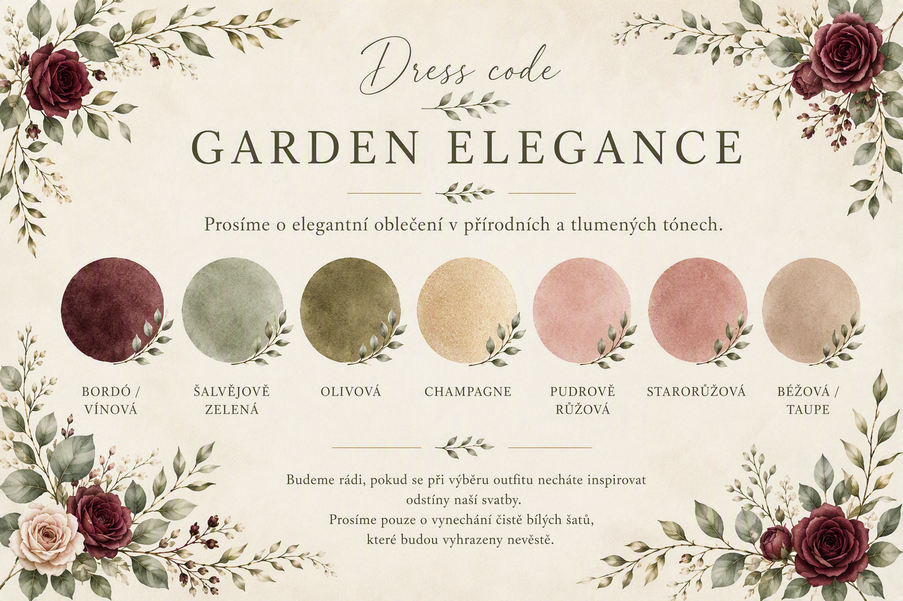

$site_welcome_text
$site_welcome_text2
$site_welcome_text3
$site_welcome_text4
$site_welcome_text5
$site_welcome_text6 $bride_name a $groom_name
Harmonogram dne
Ubytování
$ubytovani_info
$ubytovani_den_predem
$ubytovani_hrazeno
Cena za osobu: $ubytovani_cena
Doprava a parkování
Doprava
$ceremony_doprava_info
$ceremony_doprava_odjezd
$ceremony_thanks
Parkování
$ceremony_parking_info
Dress code
Garden Elegance
Prosíme o elegantní oblečení v přírodních a tlumených tónech.
Doporučené barvy:
bordó / vínová
šalvějově zelená
olivová
béžová
champagne
světle růžová
hnědá
Prosíme pouze o vynechání čistě bílých a krémových outfitů! Tyto barvy jsou vyhrazeny pouze nevěstě.
Děkujeme.

Dary
Přemýšlíte-li nad svatebním darem, vězte, že už společnou domácnost máme téměř vybavenou.
Největší radost nám proto udělá finanční příspěvek, který využijeme na společné zážitky, cestování a naši budoucnost.
Děkujeme, že tento výjimečný den oslavíte spolu s námi. ❤️
Kontakty
V případě jakýchkoli dotazů a problémů nás neváhejte kontaktovat na níže uvedených telefonních číslech. V den svatby se prosím obracejte pouze na svědkyni nevěsty, ženich ani nevěsta nebudou mít s největší pravděpodobností k dispozici telefon.
Nevěsta
Michaela Vinklárková
Tel: 603 394 867
Ženich
Petr Knop
Tel: 720 481 914
Svědkyně nevěsty
Monika Vinklárková
Tel: 608 435 138
Často kladené otázky
Mohu přivézt partnera/partnerku?
Pokud na Vám při pozvání nebylo vyložené řečeno, že je zvaný i váš doprovod, počítáme s účastí pouze pozvané osoby.
Mohu přijet s dětmi?
Naši nejmenší hosté byli pečlivě vybráni stejně jako dospělí. 😊 Pokud jsou vaše děti uvedeny na pozvánce, budeme se na ně těšit. V opačném případě si užijte den jen sami pro sebe.
Je svatba venku nebo uvnitř?
Obřad i hostina je aktuálně plánovaná venku. Pokud nám to však počasí neumožní máme i suchovou variantu, jak pro obřad, tak i pro hostinu.
Jaký je dress code a je povinný?
Veškeré informace o dress codu najdete výše přímo v sekci dress code. Dress code není povinný, ale budeme rádi, když zachováte naše barvy zmíněné v sekci dress code a nebo zvolíte jemné a tlumené odstíny. Děkujeme.
Jsou vhodné podpatky na vybrané místo?
Svatba by se měla konat na travnaté ploše mezi budovami, proto bychom doporučovali nebrat si jehlové podpatky. Avšak krom obřadu by měla být všude země zpevněná a podpatky by neměly vadit. Tuto volbu tedy necháme na vás.
Kdy je nejpozdější čas příjezdu?
Prosíme o příjezd nejpozději do 11:30, abychom mohli zahájit obřad včas.
Můžeme na svatbě fotit?
Určitě! Budeme rádi za každou fotografii. Jen během obřadu vás prosíme, abyste si jej co nejvíce užili na vlastní oči a mobil nechali schovaný. Obřad nám bude zaznamenávat fotografka Nikola. Fotky vám posléze velmi rádi poskytneme. Děkujeme za pochopení.
Co když mám potravinovou alergii nebo dietní omezení?
Uveďte prosím své dietní omezení v RSVP formuláři a pokusíme se vám vyjít vstříc. Avšak téměř vše jídlo bude podáváno formou rautu, takže si každý budem moci nabrat co chce a kolik toho chce.
Je na místě možnost platby kartou?
Ano, případné ubytování je možné být hrazeno kartou.
Jak dlouho bude oslava trvat?
DJ bude hrát tak dlouho, dokud bude chuť slavit a bavit se. Možná i nevěsta přešvihne svojí večerku a zůstane do ranních hodin. 😁
Co když budu mít další otázky?
Určitě nás neváhejte kontaktovat. Rádi vám odpovíme na všechny dotazy. Jen si prosím před kontaktováním dobře pročtěte celý web, ať se neptáte na něco, co je zde uvedeno. Děkujeme.